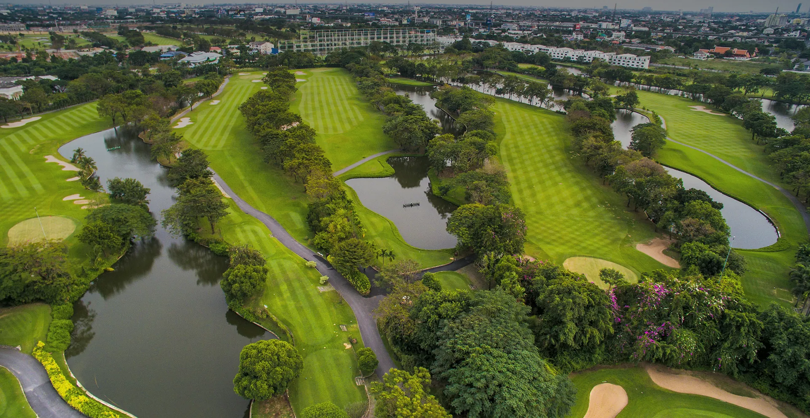

Driving range
- Monday
- 11:00 to 21:30
- Tuesday to Sunday and public holidays
- 07:00 to 21:30
- Last order
- 21:00
- Phone
- 080-392-6032

Photo: Krungthep Kreetha Association
Hua Mak, BangkokOpened 1 June 1969
The Krungthep Kreetha Association's course, rebuilt hole by hole and reopened in 1995. Pick a day to see tee times, or walk every hole before you play.
The course
Pick any hole from the rail. See its par, the yardage from each tee, the club's own diagram and a real photograph, then open the explorer to see the water and bunkers in three dimensions.
Tee 1 sits on a small island inside a pond, so the longest version starts with a carry over water. A second pond waits left of the landing area. A large bunker guards the left of the approach and a cluster of bunkers sits right of the green.
Description drawn from the club's hole diagram, awaiting the club's review.

No diagram published for this hole yet. Waiting for the club.

Front nine: par 36. Hole 10 follows the printed scorecard: par 4, 332 yd from Blue. The club's hole page prints another yardage edition (340 yd), so which edition is current waits for the club.Open the scorecard

Before and after the round
A floodlit two-storey range. No booking is needed for ordinary practice; ask at the counter about free bays and ball prices.
Driving range page
These schools teach at the association's range. Book lessons with each school directly; choose a school to see how to reach it.
All golf schoolsThai food indoors and on a terrace over the course
Italian fusion over two floors, with a terrace, a private room and karaoke
Function and meeting rooms for celebrations, weddings and company events. Room sizes and rates are not published yet; the office will quote.
Equipment, clothing, and club sets to rent if you arrive without your own. Rental prices are not published; ask at the shop.
Pro shop page
Open and closed status follows the listed hours in Bangkok time. Please call to confirm on the day.
Visit
282 Krungthep Kreetha Road, Hua Mak, Bang Kapi, Bangkok 10240
282 Krungthep Kreetha Road, Hua Mak, Bang Kapi, Bangkok 10240
Tee times 0-2736-0378-9
© OpenStreetMap contributors
The map did not load. Open Google Maps